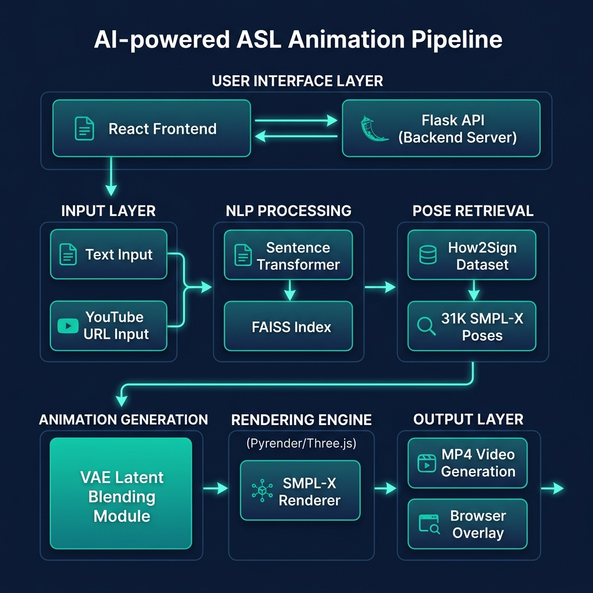
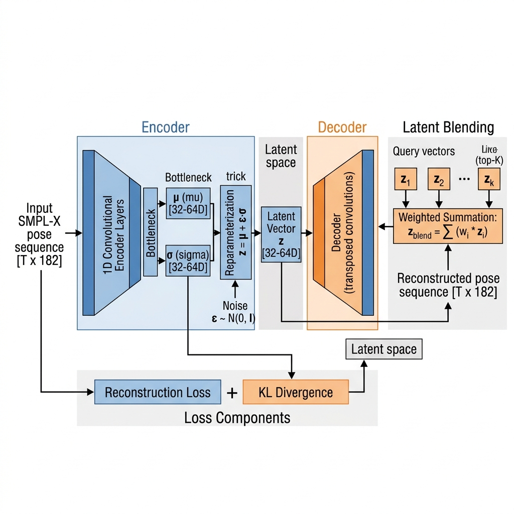
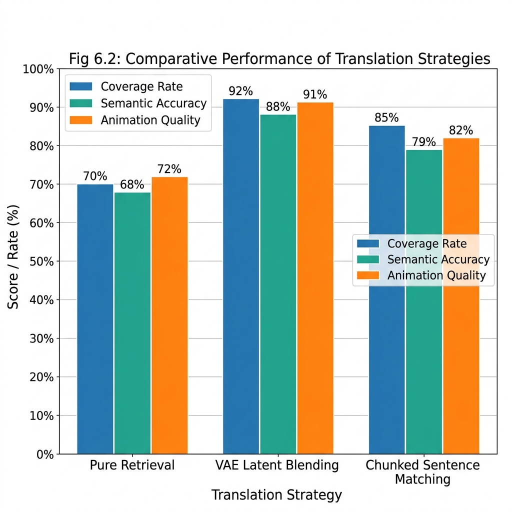

Bridging the digital accessibility gap for 70 million Deaf/Hard-of-Hearing individuals with AI-driven 3D sign language synthesis on anatomically accurate avatars
Over 70 million Deaf/HoH individuals worldwide rely on sign language as their primary communication medium. Yet digital media accessibility remains critically insufficient:
→ We need a scalable, linguistically accurate, visually realistic system that translates arbitrary English into ASL animation in real time.
SilentVoice introduces a novel four-stage cascade that bridges text understanding and 3D motion generation — combining the reliability of retrieval with the expressiveness of generative models:
Three-tier architecture: Presentation (React frontend + Chrome extension) → Application (Flask API + core pipeline) → Data (31K SMPL-X poses, VAE checkpoint, FAISS index)

Instead of retrieving a single clip, we encode top-K semantically matched pose sequences into a shared latent manifold and perform similarity-weighted interpolation:
Why it works: Convex combinations in VAE latent space produce outputs that lie within the learned distribution of natural ASL motion — guaranteeing anatomical plausibility without hallucination artifacts.

Evaluated on 200-sentence held-out test set rated by 3 bilingual ASL/English evaluators:
| Strategy | Coverage | Semantic Acc. | Anim. Quality |
|---|---|---|---|
| Pure Retrieval (top-1) | 70.0% | 68.5% | 72.0% |
| VAE Latent Blending ★ | 92.0% | 88.0% | 91.0% |
| Chunked Matching | 85.0% | 79.5% | 82.5% |
| MDM Generation (v3) | 48.0% | 41.0% | 38.0% |
